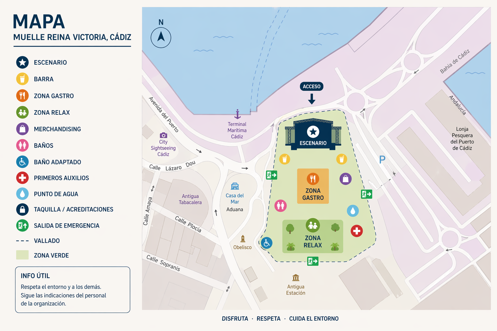
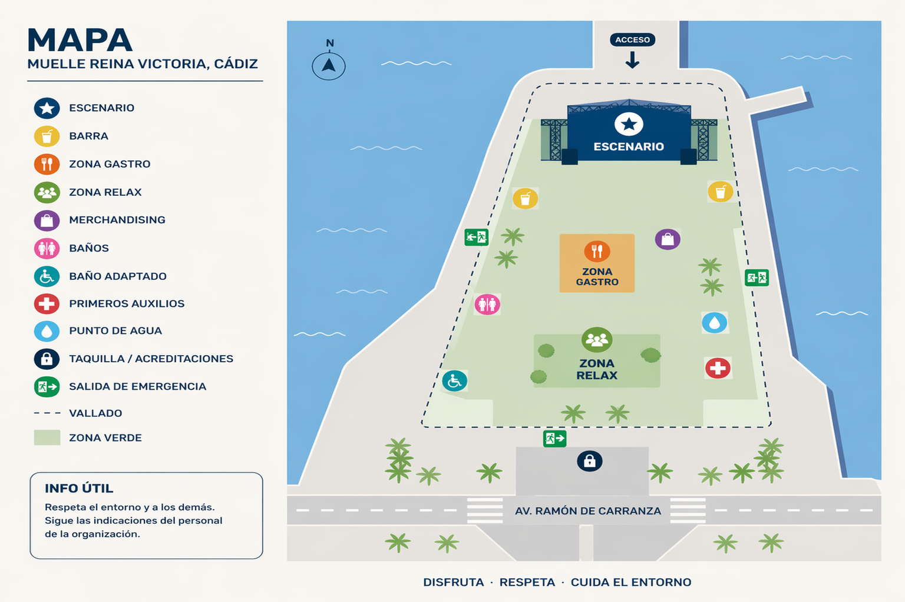

Información
Aquí puedes encontrar información relativa a la ubicación, mapas de acceso y preguntas frecuentes
Mapas


Cómo llegar
Muelle Reina Victoria, Avenida Ramón de Carranza, 11006 Cádiz, España
Abrir ruta en Google MapsResuelve tus dudas
Entradas
-
¿Qué tipos de entrada existen?
En esta primera edición de SoroFest sólo existe un tipo de entrada: entrada general.
-
¿La entrada sirve para los tres días?
Sí, la entrada general permite el acceso a los tres días del festival.
Festival
-
¿Dónde se celebra SoroFest?
SoroFest se celebra en el Muelle Victoria de Cádiz.
-
¿Cuándo se celebra?
Los días 17, 18 y 19 de Julio 2026.
Accesibilidad e inclusión
-
¿El festival será accesible?
Si. La accesibilidad es uno de los principios fundamentales de SoroFest y el rencinto estará adaptado.
-
¿Es un espacio seguro e inclusivo?
Sí. SoroFest es un espacio abierto a la diversidad, pensado para ofrecer una experiencia segura, cercana e inclusiva.
Menores y familias
-
¿Pueden acceder menores de edad?
Si, los menores podrán acceder acompañados por una persona adulta.
-
¿Habrá espacios para familias y bebés?
Sí. El festival contará con zonas y servicios orientados al cuidado y la atención de bebés y familias.
Normas y servicios
-
¿Habrá comida y bebida dentro del recinto?
Si, el festival contará con oferta gastronómica dentro del recinto.
-
¿Se podrá entrar y salir del recinto?
Sí, el festival permite la entrada y salida del recinto enseñando nuevamente en cada acceso la entrada al festival.